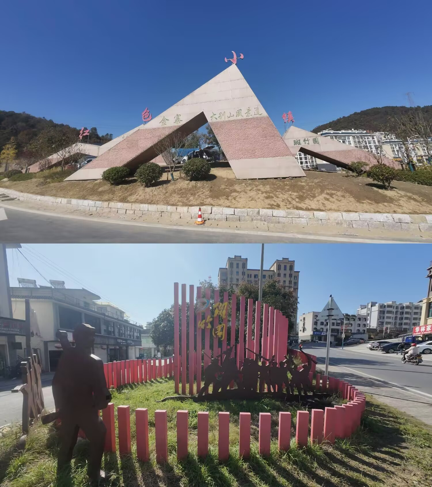

★
🚩
走进红二十五军
的起源地
一起解锁红色故事
★
⚔️
开启红色之旅
↓
向下滑动探索
☁️
☁️
☁️
🚌
📷
🗺️
红色征程地图
点击图标 · 解锁红色记忆
🔒
★
斑竹园镇
红色摇篮
🔒
★
将军故里
英雄辈出
🔒
★
立夏节起义
革命烽火
🔒
★
会师广场
红军诞生
🔒
★
烈士纪念园
英魂永驻
🔒
★
红色小镇
薪火相传
★
恭喜完成探索！
您已成功解锁全部红色故事
深入了解了斑竹园的革命历史
感受了先烈们的英勇事迹
★
如想了解更多
请关注后续更新
✕
★
站点标题
★
历史介绍
这里是站点的详细介绍内容...